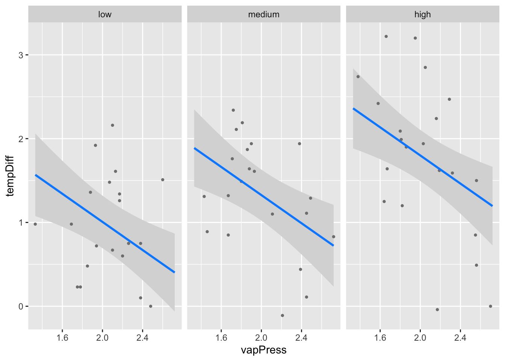

Welcome to emmeans.
Caution: You lose important information if you filter this package's results.
See '? untidy'
library(modelr)
Attaching package: 'modelr'
The following object is masked from 'package:broom':
bootstrap
The following objects are masked from 'package:performance':
mae, mse, rmse
1. Complex Linear Models and their Design Matrices
For this exercise, we will consider the penguins data set from the palmerpenguins package. The data set contains various measures of penguin size, species, and sex, along with the year and island when/where the observations were made. Begin by loading the data and dropping observations that have missing values for some of the predictors. For this data, we can filter on not being NA for sex:
library(palmerpenguins)data(penguins)#some incomplete cases to filter outpenguins <- penguins |>filter(!is.na(sex))
1A. First, consider a linear model in which you attempt to predict a penguin’s body mass (body_mass_g) from its flipper length (flipper_length_mm) and the sex (sex) of the penguin.
1B. Write down the entries in the design matrix, \(X\) for the first 3 observations in the data set. Don’t forget the intercept! Verify you are correct with the model.matrix() function. Note, to see how to write a table in markdown for a quarto document, check out https://quarto.org/docs/authoring/tables.html
Okay so, if the female is 0 (because it’s alphabetically first), then looking at the penguins data set:
head(penguins, n =3)
# A tibble: 3 × 8
species island bill_length_mm bill_depth_mm flipper_length_mm body_mass_g
<fct> <fct> <dbl> <dbl> <int> <int>
1 Adelie Torgersen 39.1 18.7 181 3750
2 Adelie Torgersen 39.5 17.4 186 3800
3 Adelie Torgersen 40.3 18 195 3250
# ℹ 2 more variables: sex <fct>, year <int>
I believe the design matrix entries for the first three observations would be:
1C. Now, consider adding species to the model in addition to flipper length (flipper_length_mm) and the sex (sex) of the penguin. Fit the model using effects coding. Write down the entries in the design matrix for the following observations:
# Fieberg equates "effects coding" and dummy coding.# I believe this is the default in R's lm() function for categorical variablespenguin_lm_3v <-lm(body_mass_g ~ flipper_length_mm + sex + species,data = penguins)penguins[c(1, 2, 200, 201, 300, 301),c("body_mass_g", "flipper_length_mm", "sex", "species")]
# A tibble: 6 × 4
body_mass_g flipper_length_mm sex species
<int> <int> <fct> <fct>
1 3750 181 male Adelie
2 3800 186 female Adelie
3 4900 217 female Gentoo
4 5050 220 male Gentoo
5 3600 195 male Chinstrap
6 3900 199 female Chinstrap
1D. Lastly, let’s allow the effect of flipper length to be sex-specific. This can be accomplished by adding an interaction between sex and flipper_length_mm. Again, write down the entries in the design matrix for 6 observations selected just above. Check yourself with model.matrix().
For this exercise, we will use the leaftemp data set in the DAAG package. The data set contains measurements of vapor pressure (vapPress) and differences between leaf and air temperatures (tempDiff) in an experiment conducted at three different levels of carbon dioxide (CO2level).
pacman::p_load(DAAG)data(leaftemp)
2A. Fit the following three models to these data:
- simple linear regression: lm(tempDiff ~ vapPress, data = leaftemp) - Analysis of covariance: lm(tempDiff ~ vapPress + CO2level, data= leaftemp) - Interaction model: lm(tempDiff ~ vapPress*CO2level, data= leaftemp)
2B. Do all of these models pass checks of assumptions?
check_model(lm1)
# Looks good to me!check_model(lm2)
# Still lookin good!check_model(lm3)
# Still looks good. The VIF is extremely high for CO2level and vapPress:CO2level, but that is okay# for an interaction effect. We saw in the previous model check that there isn't strong collinearity # between CO2level and vapPress
Yes! Each of these models passes our checks of assumptions.
2C. For the Analysis of covariance model, write down the equation Corresponding to the model. In quarto, you can use LaTeX to write equations fairly simply.
Let’s look at our data and at lm2
head(leaftemp)
CO2level vapPress tempDiff BtempDiff
1 high 2.56 1.50 1.84
2 low 1.88 1.36 1.54
3 medium 2.38 1.94 1.96
4 high 2.55 0.85 0.93
5 low 2.20 0.60 0.68
6 medium 2.72 0.83 0.89
So we have 3 levels of CO2level, and slopes for CO2levelmedium and CO2levelhigh based on dummy coding CO2level.
So our equation would be: \(tempDiff = -0.8392(vapPress) + 0.3199(CO2levelmedium) + 0.7931(CO2levelhigh) + \epsilon\)
2D. Plot the predicted mean temperature difference as a function of vapor pressure (and when appropriate, CO2 level) for each of the 3 models.
Isn’t the output of the model the predicted mean? So for simple linear regression isn’t just plotting the best fit line plotting the predicted mean temperature as a function of the predictor?
# For simple linear regression, just plot predictor against predictedvisreg(lm1)
# For multiple lr with one continuous variable, one categorical variable, and no interaction,# plot predictor against predicted faceted category. Lines will be parallel.visreg(lm2, gg =TRUE, xvar ="vapPress", by ="CO2level")

# For multiple lr with one continuous variable, one categorical variable, and interaction,# plot predictor against predicted faceted category. Lines won't be parallel.visreg(lm3, gg =TRUE, xvar ="vapPress", by ="CO2level")
3. Interactions with Continuous Variables
Scientists wanted to simulate how different biological interactions might influence the carbon burial potential of sinking algae in the deep ocean. Let’s use this simulated data which features sinking rate, microbial abundance, and detritovore abundance as predictors of net carbon sequestration.
3A Load the data, inspect it, and fit a model with a 3-way interaction, Do you meet assumptions?
Rows: 100 Columns: 4
── Column specification ────────────────────────────────────────────────────────
Delimiter: ","
dbl (4): sink_rate, microbial_abundance, detritivore_biomass, net_carbon_seq...
ℹ Use `spec()` to retrieve the full column specification for this data.
ℹ Specify the column types or set `show_col_types = FALSE` to quiet this message.
sink_rate microbial_abundance detritivore_biomass
Min. :0.0000 Min. :0.0000 Min. :0.000
1st Qu.:0.9284 1st Qu.:0.7603 1st Qu.:1.187
Median :2.0903 Median :1.7456 Median :2.462
Mean :2.0379 Mean :1.7807 Mean :2.169
3rd Qu.:3.3687 3rd Qu.:2.8463 3rd Qu.:3.224
Max. :3.9231 Max. :3.9172 Max. :3.970
net_carbon_sequestration
Min. :-8.2907
1st Qu.:-3.1387
Median :-0.7046
Mean :-0.5413
3rd Qu.: 1.4131
Max. :11.1405
visdat::vis_dat(c_burial)
skimr::skim(c_burial)
Data summary
Name
c_burial
Number of rows
100
Number of columns
4
_______________________
Column type frequency:
numeric
4
________________________
Group variables
None
Variable type: numeric
skim_variable
n_missing
complete_rate
mean
sd
p0
p25
p50
p75
p100
hist
sink_rate
0
1
2.04
1.24
0.00
0.93
2.09
3.37
3.92
▅▅▅▃▇
microbial_abundance
0
1
1.78
1.16
0.00
0.76
1.75
2.85
3.92
▇▇▇▃▅
detritivore_biomass
0
1
2.17
1.20
0.00
1.19
2.46
3.22
3.97
▅▆▃▇▇
net_carbon_sequestration
0
1
-0.54
3.75
-8.29
-3.14
-0.70
1.41
11.14
▃▇▇▂▁
# fit a lm with a 3-way interactionburial_lm <-lm(net_carbon_sequestration ~ sink_rate*microbial_abundance*detritivore_biomass,data = c_burial)# check assumptionscheck_model(burial_lm)
# need to check that additive predictors are not collinearcheck_collinearity(lm(net_carbon_sequestration ~ sink_rate + microbial_abundance + detritivore_biomass,data = c_burial)) |>plot()
# looks great
Assumptions look quite good. VIFs are inflated due to inclusion of interaction. Examing VIFs with interaction excluded, we see there is no concerning collinearity.
3B Now the fun part - inference. What do the coefficients tell you?
All the predictors are continuous variables, so the coefficients for sink_rate, microbial_abundance, and detritivore_biomass tell us how the net_carbon_sequestration changes for a unit increase in each of those variables respectively, if all others are held constant at 0. The sink_rate:microbial_abundance coefficients I believe tells us how the impact of a unit increase of sink_rate on net_carbon_sequestration changes as microbrial_abundance increases. If I have that right, it means for each unit increase in microbial_abundance, a unit increase of sink_rate will further increase net_carbon sequestration an additional ~1.73 units… and similar for the other two “pair wise” interactions. The coefficient for sink_rate:microbial_abundance:detritivore_biomass would then be similar, except now the impact of a unit increase of sink_rate on net_carbon_sequestration changes based on increases in both microbial_abundance and detritivore_biomass.
3C OK - that’s a lot. Use your skills of visualization to tease out what the data is telling us. You can use visreg() or augment() with data_grid() or whatever you would like. Make this model make sense so that you can tell your audience how these three parameters work together to influence carbon burial!
# Tile or raster plot of two variables, faceted by the 3rd variable. # Make counterfactual data framemodeled_data <-data_grid( c_burial,microbial_abundance =seq_range(microbial_abundance, 50),detritivore_biomass =seq_range(detritivore_biomass, 50),sink_rate =seq_range(sink_rate, 50)) |>mutate(sink_rate_level =cut(sink_rate, breaks =3, labels =c("Sink Rate Low", "Sink Rate Medium", "Sink Rate High")) ) |>augment(burial_lm,newdata = _, # uses the prediction frame modeled_datainterval ="confidence") |>rename(net_carbon_sequestration = .fitted)# Crate raster plots of net_carbon_sequestration predicted by microbial_abundance and# detritivore_biomass, faceted by sink_rateggplot(data = modeled_data, mapping =aes(x = microbial_abundance,y = detritivore_biomass, fill = net_carbon_sequestration)) +geom_raster() +facet_wrap(~ sink_rate_level) +scale_fill_viridis_c(option ="G") +labs(x ="Microbial Abundance",y ="Detritivore Biomass",title ="Visualizing Drivers of Net Carbon Sequestration",subtitle ="The Impact of Detritivore Biomass and Microbial Abundance on Net Carbon Sequestration Appears to Reverse as Sink Rate Increase",fill ="Net Carbon Sequestration") +theme(plot.title =element_text(vjust =1, hjust =0.5),plot.subtitle =element_text(size =8))
We can see in our plot above that when sink rate is low, higher detritivore biomass and microbial abundance result in lower net C sequestration, but when sink rate is high, net C sequestration is highest when detritivore biomass and microbial abundance are high. Notably, when sink rate is high, net C sequestration is lowest when either detritivore biomass or microbial abundance is low, but not when they are both low. Neat!
Meta 1.
Where do you think we will go next with models like these?
Nonlinearity??? Non-normal distributions???
Meta 2.
In particular, what do you find most interesting about intereaction effects? What do you find most intimidating?
It really helps to understand the complexity of natural systems to be able to visualize how when factor that independently cause something are simultaneously active, they may have a completely different effect. Super cool.
As for intimidating, it’s definitely just nerve wracking to thing of how much I might miss when examining data. Who knows if there is a variable I didn’t capture, which when it interacts with the data I did capture, completely changes the relationships I might see.
Meta 3.
How do you think you will use complex linear models like these in your own work?
I am currently working with MassBays to compile and examine lots of existing environmental time series data from the Wellfleet, MA area to examine what environmental factors may be driving the large decline in eelgrass coverage seen in that area over the last ~30 years. I may be running some sort of regression of eelgrass coverage as predicted by a suite of environmental variables.
Meta 4.
Now that we have fully explored purely “linear” models, what one question or concern do you still have?
I would love to review statistical tests further and examine how lms parallel / overlap with them. We had a reading on this, but I certainly don’t fully grasp it all yet.
Meta 5.
How much time did this take you, roughly? Again, I’m trying to keep track that these assignments aren’t killer, more than anything.
4 - 5 hours, including reviewing comprehension, etc.
Meta 6.
Please give yourself a weak/sufficient/strong assessment on this assigment. Feel free to comment on why.